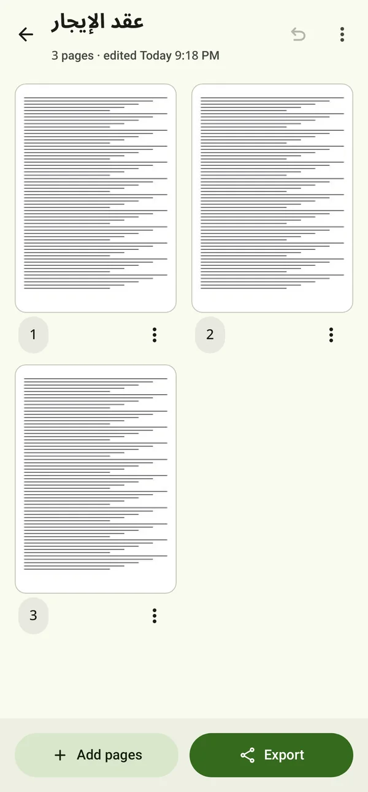

Scan Kiwi turns paper into clean PDFs on your Android phone. Every feature works offline. The app connects to the internet only to check for and download updates from GitHub (weekly, and you can turn it off). No account, no ads, open source.
Free · version 2.0.2 · Android 7.0 or later · Arabic and English · not on Google Play

Scan Kiwi in English, with synthetic test pages (screenshot from version 1.2.0).
Features
From paper to PDF in a few taps
Everything happens on your phone. Your documents stay in the app’s private storage until you share or save them.
Finds the page for you
Live edge detection outlines the page, also in dim light and on busy backgrounds, and auto-capture takes the photo when the outline holds steady. Quality warnings tell you about blur or a cut-off page and never block you. A manual shutter is always there too.
Corners you can fix
Drag the corners and sides with a magnifier under your finger. The page is straightened and cropped, and you can re-crop it later.
Clean filters
Original, enhanced colour, grayscale, black and white, and shadow removal. Black-and-white pages are stored as 1-bit images for small files.
PDFs that fit
A4, Letter, A5, Legal or fit to image, in three quality levels, with the expected size shown before you share, or an exact target size. Archival PDF/A and AES-256 password protection are options.
Arabic text recognition
On-device text recognition makes searchable PDFs. Version 2.0 adds an “Accurate” mode for Arabic: character error of 9.0 % instead of 29.0 % on held-out test pages, measured on a computer, not on a phone. Results still depend on print quality and light. Tables come out as rows in reading order.
ID cards and signatures
ID-card mode puts the front and back at true size on one A4 page. Draw your signature once and place it on any page.
Search and organise
Search all your documents by name and text, with the word highlighted on the page. View and correct the recognised text, export it as TXT, and keep documents in folders and favourites.
PDF tools
Merge, split, extract, reorder by dragging, rotate, add a blank page, extract the text, turn pages into JPG, add page numbers or a watermark, and set or remove an AES-256 password.
Books and glare
Book mode splits a two-page spread at the spine. Glare removal combines two shots, and deskew and noise reduction clean up the page.
Privacy
Works offline, updates from GitHub
Your documents never leave the phone. Scanning, text recognition, search and PDF tools all run on the phone. The only connection is to GitHub, to check for and download updates.
Four permissions. Camera (to scan); internet and network state (only to check for and download updates); install packages (to install an update after you confirm it). You can check this in Android’s app settings.
No account, ads or trackers. Cloud backup and device transfer of your documents are turned off.
Arabic first, English included. Full right-to-left layout, light and dark themes, and TalkBack labels.
Open source under Apache-2.0. Anyone can read the code and build it.
Install
Install the APK in four steps
Scan Kiwi is not on Google Play, so you install the file yourself. Android asks you to allow installs from the app you download it with.
Steps
Download the latest APK on your phone with the button on this page. It opens the latest release on GitHub, where the file is ScanKiwi-2.0.2.apk.
Open the file from the download notification or your Files app.
Allow the install. Android shows a message about unknown apps: tap Settings, turn on “Allow from this source”, then go back.
Tap Install, then Open.
What you need
Android 7.0 or later, on an ARM phone (arm64-v8a or armeabi-v7a).
A camera for scanning. Importing images and PDFs works without one.
Already have Scan Kiwi 1.2.0? Version 2.0.2 installs over it and keeps your documents (same signing key). From 2.0 on, the app can fetch later updates itself.
Updates
How to get new versions
Scan Kiwi connects to the internet only to check for and download updates from GitHub (weekly, can be turned off). You can check by hand in Settings ▸ Updates ▸ Check for updates, or the app checks automatically at most once every 7 days when you open it. Downloads use Wi-Fi only by default. An update is installed only if it matches the SHA256SUMS file published with the release and is signed with the same certificate as the installed app, and Android asks you to confirm the install. When the app or your browser contacts GitHub, GitHub sees your IP address, as with any website. You can also update by hand from the releases page.
Turn the automatic check off in Settings ▸ Updates. Your documents, their images and their text are never sent anywhere.
To check a download, compare its SHA-256 with the one in SHA256SUMS.txt of the same release. On a computer, run Get-FileHash .\ScanKiwi-2.0.2.apk (Windows) or sha256sum ScanKiwi-2.0.2.apk (Linux, macOS).
Signing certificate SHA-256: 26e5ed001c7343de4eac67086be4ddade5b39cae8029c72b552b057bdf2dcce6. Android refuses any update that is not signed with this certificate.
The APK is built and signed on the developer’s PC, not on GitHub, so it has no GitHub attestation. The release includes a parts list (SBOM) and an unsigned SLSA Build L1 provenance file that says exactly that.
Not to scan. Scanning, text recognition, search and PDF tools all work offline. The app connects to the internet only to check for and download updates from GitHub, once a week at most, over Wi-Fi by default, and you can turn it off.
Why isn’t it on Google Play?
Scan Kiwi is published only here and in its GitHub releases, so it is not on Google Play. That is why Android asks you to allow installs from this source the first time.
Android warns me about installing unknown apps. What should I do?
This message appears for every app that doesn’t come from an app store. Download the APK only from this page or our GitHub releases, and you can compare its SHA-256 fingerprint with the one shown above.
Will I lose my documents when I update?
No. Each version is signed with the same key, so it installs over the old one and keeps your documents and settings, including from 1.2.0.
How well does it read Arabic text?
Version 2.0 reads Arabic much better than before: character error of 9.0 % instead of 29.0 % on held-out test pages, measured on a computer. Accuracy on your phone depends on the print, the font size and the light. Scanning, cropping and PDFs work the same in every language.
Where are my documents stored?
In the app’s private storage on your phone. Other apps can’t see them until you share or save a file. Uninstalling the app deletes them, so save the ones you want to keep first.
Can I see the code?
Yes. Scan Kiwi is open source under the Apache-2.0 licence, with build instructions in its GitHub repository. The name and icon are trademarks and are not covered by the licence.